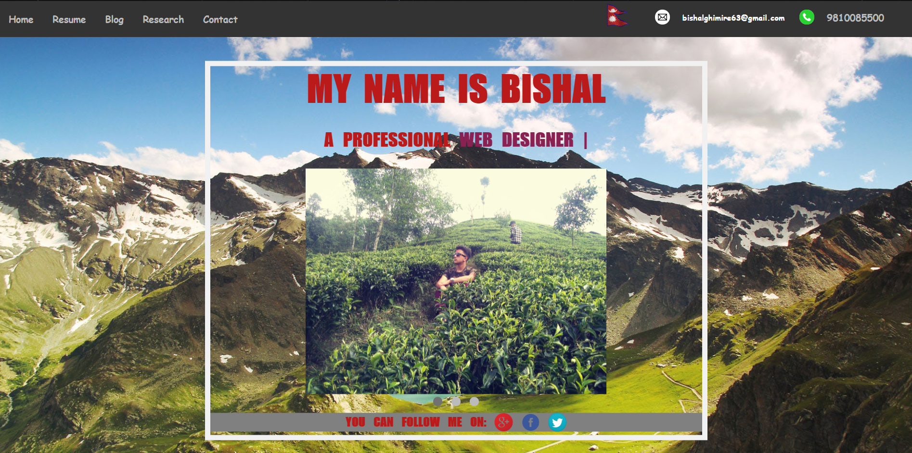
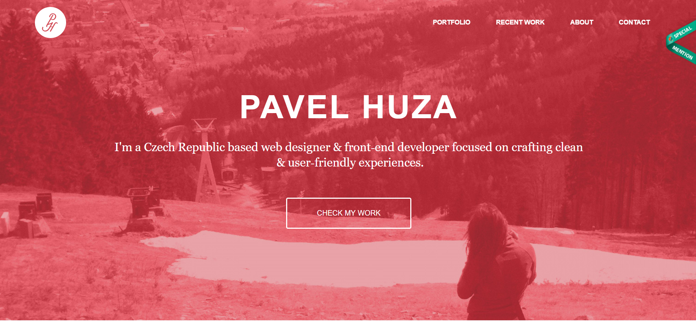
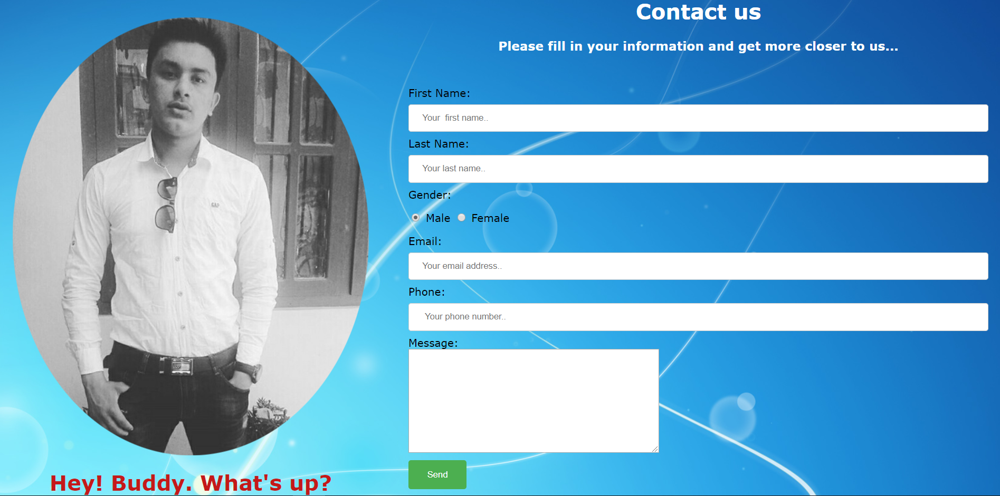
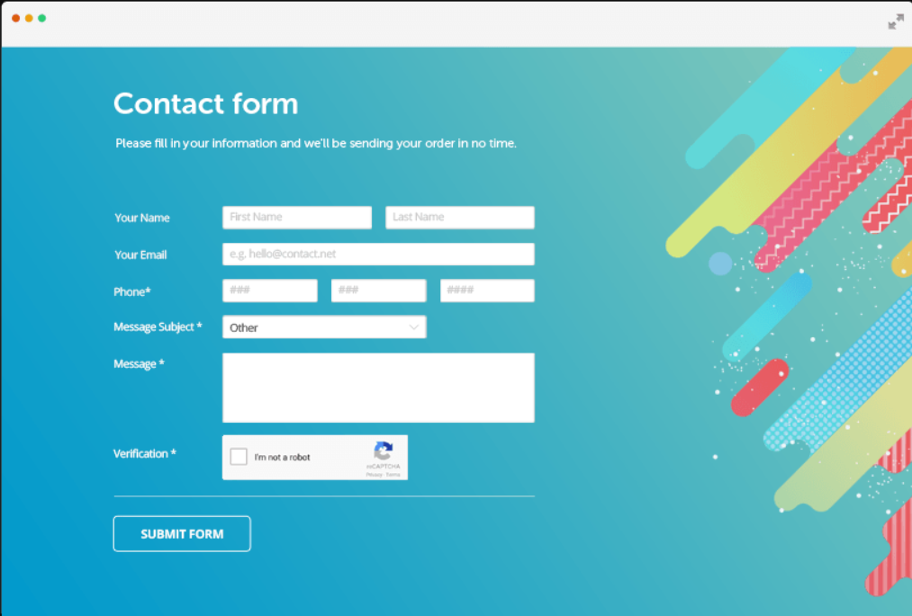
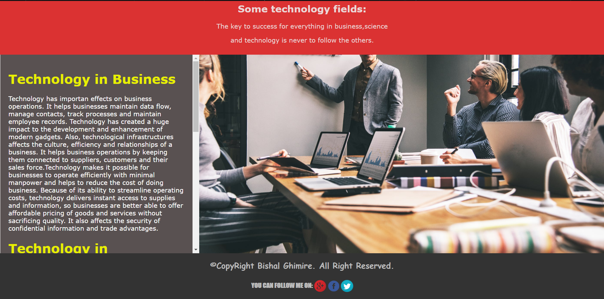
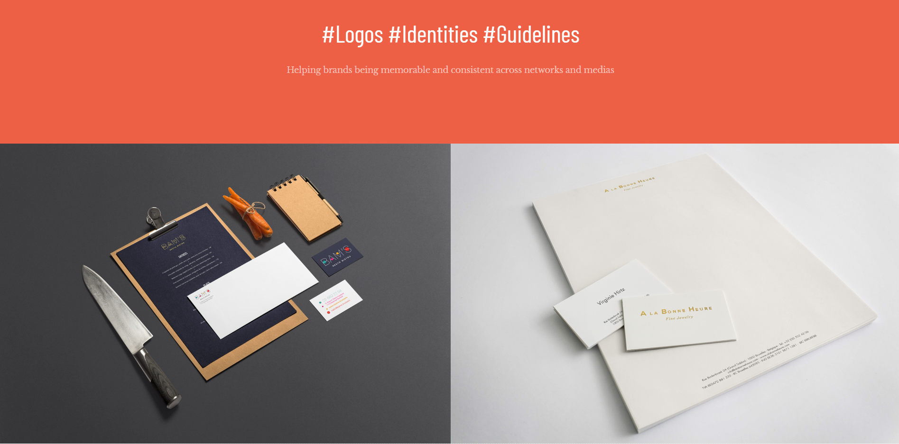

YOU CAN FOLL0W ME ON:


ResearchResearch is the systematic exploration or analysis into and study of materials and sources or anything in order to establish facts and reach to the new conclusion.In this coursework to complete all the task reserach into with regard to what really matters to my project.Basically, this project is all about the web developments which is very new to the beginners so to get the some ideas about the related topics without the research it was difficult.So,I have taken the references from the many sites to sucessesfully complete my project.We know that lots of research helps us to gain the sources of knowledge and it will pull us out from the difficulties always. So here are the some information’s that I have taken the screenshot while I have done in my project. |
Home Page INSPIRATION:The body design of the home page were inspired from it. The simplest design made me attracted towards it. The minimistic theme was choosen from this home page which essense can be seen throughout the project. PROBLEMS:The design of ascendant used bootstrap while designing the webpage. Since the requirement of the coursework was to use only HTML, CSS and Javascrip. So, we were not recommended to use bootstrap software and I had only the visual detail of the internal design and navigation bar. SOLUTIONS:Firstly, I learned how to adjust the navigation bar and footer in a website. I looked after lots of website and tutorial videos on youtube for the best design of my own website. After several session of basics of HTML and CSS, I was able to design my navigation bar and the body consisting of a slider image. |
Contact Page INSPIRATION:The contact page of my websie was designed from the picture shown in right. The body design of it was simple and which made me attracted towards it. The minimistic theme was choosen from this home page which essense can be seen throughout the project. PROBLEMS:The design of the website I had recommended had a verification section. I was not able to keep that section in my contact page due to complexity of the code. Also I had problem in adjusting the java script in it. SOLUTIONS:I took references from different websites to adjust the position of the form. Mainly I looked after W3School. This website had a vital role in the developement of my website. | |
Blog Page INSPIRATION:The body design had a unique color complexion. I was quite fascinated with it. It had a simple section divided with text and images. PROBLEMS:The only problems with my blog section was keeping the text slider. Due to it I had problem in adjusting the size of image in the right section. But a lot of research had a great effect in designing my webpage. SOLUTIONS:I choosed the color of the division section from HTML color picker .The image height and width was also adjusted by creating a division section. | |